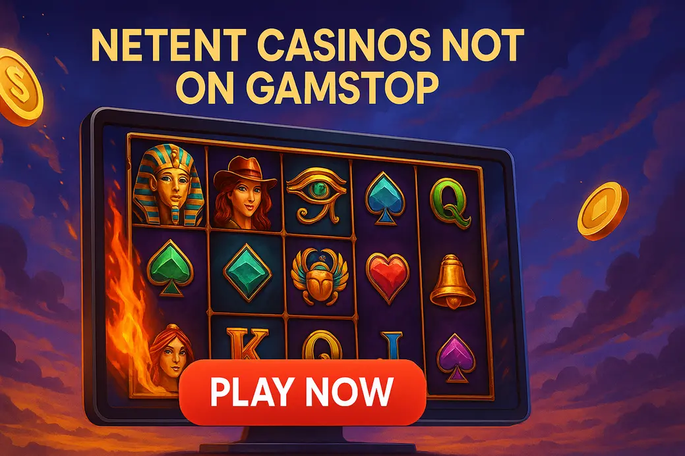

Netent Casinos Not on GamStop

Last Updated: 7 October 2026 | Verified by iGaming experts
Looking for non gamstop casinos netent players can actually enjoy without digging through a messy lobby? The short version: NetEnt is still a class act for slots, but the casino wrapped around those games matters just as much. Search filters, withdrawal speed, bonus terms, mobile loading — that’s where the good sites pull ahead and the weak ones start showing their bollocks.
NetEnt casinos not on GamStop sit outside the UK self-exclusion network, so they are not the same as UKGC-licensed casinos. That freedom brings bigger game libraries, crypto options and fewer account friction points. It also means you need to be more switched on. Honestly, if a site hides wagering rules three clicks deep, treat it like a pub quiz team that keeps changing its answers.
This page keeps things practical: which casinos feel smooth, which NetEnt games deserve your spins, where the catches sit, and how to avoid turning a fun slot session into a damn admin job.
Top-5 NetEnt Casinos Not on GamStop UK 2026
The best NetEnt casinos outside GamStop are not just the ones shouting about big bonuses. You want a site where the provider menu works, the cashier is easy to read, and Starburst does not sit buried under 900 crash games and three sponsored banners.
For 2026, DonBet, MyStake, GoldenBet, VeloBet and Rolletto stand out because they combine modern casino layouts with enough slot depth to keep NetEnt fans busy. None is perfect. DonBet’s promo pages can feel busy. MyStake has loads going on, which is great until you just want one slot and a quiet spin. GoldenBet is cleaner but less flashy. VeloBet leans sportsbook-heavy in places. Rolletto looks slick, though its huge lobby needs filters unless you enjoy scrolling like it owes you money.
Best NetEnt Slot Sites Not Covered by GamStop
The best sites for netent slots not on gamstop make the actual slot hunt painless. Sounds basic, but plenty of offshore casinos still serve a lobby like someone tipped a box of game tiles onto the floor. The search bar actually works on MyStake and VeloBet; type “Dead” and Dead or Alive appears without needing the exact full title. That is a small thing until you are on mobile with one thumb and zero patience.
| Casino | Best For | Payments | Trade-off |
|---|---|---|---|
| GoldenBet Casino | Clean slot browsing and simple bonus flow | 💳 Debit Card · ₿ Bitcoin · 🪙 Tether | Smaller promo feel than louder rivals |
| DonBet Casino | Fast-moving casino lobby with strong filters | 💳 Debit Card · ₿ Bitcoin · 💼 E-wallets | Bonus pages need a careful read |
| CosmoBet Casino | Bright casino design and easy game discovery | 💳 Debit Card · ₿ Bitcoin · 🏦 Bank Transfer | Some menus feel packed on smaller screens |
| Mystake Casino | Huge all-round library and crypto users | ₿ Bitcoin · 🪙 USDT · 💳 Debit Card | Busy site if you dislike clutter |
| VeloBet Casino | Players mixing slots with sports betting | 💳 Debit Card · ₿ Bitcoin · 💼 E-wallets | Casino gets less spotlight than sportsbook |
By the way, don’t judge a site only by whether it lists NetEnt. Judge whether games launch quickly, whether the demo button is separate from real-money play, and whether the bonus contribution for slots is 100% or has weird exclusions hiding underneath.
GoldenBet Casino
GoldenBet Casino is the sensible shoes option, and I mean that as a compliment. It feels less frantic than many netent casinos not on gamstop, with a straightforward lobby, clear categories and a cashier that does not make you guess what each method costs.
The main win is usability. On mobile, the slot tiles load in neat rows, and the spin button is not constantly buried by a sticky promo bar. GoldenBet suits players who want NetEnt classics, Pragmatic Play extras and a simple deposit path. The weakness is that it lacks the carnival energy of bigger sites; if you want endless missions, races and flashing widgets, it can feel a bit plain.
DonBet Casino
DonBet Casino is punchier. The lobby has that modern iGaming “everything is happening now” feel, but it still gives you provider filters that do their job. Search for Starburst, Gonzo’s Quest or Twin Spin and you are not wrestling the interface.
It is strong for players who want quick access to slots and crypto banking. A Bitcoin withdrawal landing in 6 hours is the kind of detail players remember, although speed always depends on account checks and network traffic. The trade-off is promotional noise. DonBet’s offers can look generous, but wagering, max bet limits and game weighting need reading before you hit claim. Boring? Yes. Important? Bloody yes.
CosmoBet Casino
CosmoBet Casino goes for colour and movement. The site feels lively, with a casino-first presentation that works nicely if you like browsing by theme instead of provider. NetEnt titles sit beside newer video slots, live dealer games and crash-style products, so it does not feel dusty.
The good bit is discovery. If you enjoy jumping from a low-volatility spin like Starburst to something punchier from Nolimit City, CosmoBet makes that easy. The drawback is mobile density. On smaller screens, some menus feel too keen to show everything at once. It is not a deal-breaker, but your thumb gets a workout.
Mystake Casino
Mystake Casino is the giant supermarket. Massive shelves, loads of choice, and a fair chance you went in for milk and came out with three multipliers, live blackjack and a tournament ticket. For netent not on gamstop searches, MyStake earns attention because its library is deep and its search bar is genuinely useful.
Crypto players get the smoothest experience here, especially with Bitcoin and USDT. The casino also handles mobile surprisingly well for such a big site; game launch screens are quick, and favourites help cut through the clutter. Weakness? It is busy. New players can feel nudged in ten directions, so use the search bar, set a budget, and ignore half the shiny stuff.
VeloBet Casino
VeloBet Casino is best for players who like having sportsbook and casino in the same account. The casino section has a solid provider spread, and NetEnt-style slots sit alongside live dealer tables, instant games and higher-volatility modern releases.
The practical detail I like: switching between sports and casino does not feel like opening a new website. It is snappy. The weakness is focus. Because VeloBet has a strong betting identity, the casino promos are not always as front-and-centre as slot-only players want. If you only care about NetEnt games, use filters immediately rather than browsing the homepage.
Why Choose NetEnt Casinos Outside GamStop?
Players look at NetEnt casinos outside GamStop for three main reasons: game access, payment flexibility and fewer UK-only restrictions. NetEnt’s older slots still have a clean feel that many newer games lack. Starburst, Twin Spin, Jack and the Beanstalk and Dead or Alive are simple to understand but not boring. That is harder to pull off than it sounds.
- NetEnt classics with familiar maths and smooth animations.
- Crypto options such as ₿ Bitcoin and 🪙 USDT at many offshore casinos.
- Less friction during sign-up, especially for experienced players.
- No UKGC safety net if support handles a dispute badly.
- Bonuses can include strict max bet caps, often £/€5 per spin.
- Responsible gambling tools vary by operator.
The short version: the games are appealing, but the casino licence and terms do the heavy lifting. A slick lobby means nothing if withdrawals get awkward after a decent win.
Benefits of Playing NetEnt Slots Not on GamStop
NetEnt slots have aged well because they were built with clarity. You know where the wilds are, the paylines make sense, and the audio does not sound like a washing machine full of coins. For netent games not on gamstop, that familiarity helps when you are playing away from UK-regulated sites.
A big benefit is session rhythm. NetEnt does not bury every result under five animations and a fake near-miss parade. That makes bankroll tracking easier. The flip side is that some older titles feel less explosive beside Megaways, Bonus Buy and modern cluster games.
Important Considerations
Before you deposit at non GamStop casinos with NetEnt, get three things straight: licence, limits and withdrawals. If those are vague, leave. A casino that cannot explain its max withdrawal time clearly is already wasting your evening.
Look for minimum withdrawal amounts, document checks, bonus max cashout limits and game restrictions. If you claim a bonus, keep your stake below the max bet rule. Many casinos void bonus winnings if you go over, and they will not care that it was an accident.
- Claiming a big bonus before checking whether Starburst, Dead or Alive or jackpot slots are excluded.
- Playing high-volatility NetEnt titles with a tiny bankroll, then blaming the game after 70 empty spins.
- Using crypto without checking network fees and withdrawal review times first.
Also, set session limits before the first spin. Not after a loss. Not after a “nearly bonus” tease. Before. That one habit saves more bankrolls than any clever slot strategy ever will.
Popular NetEnt Games Available
NetEnt’s catalogue is full of recognisable names, but they do not all play the same. Some are chilled. Some are nasty little variance machines wearing a friendly jacket.
| Game | RTP / Volatility | Why play it | Weakness |
|---|---|---|---|
| Starburst | 96.09% RTP version / Low volatility | Fast, simple, expanding wilds, good for bonus wagering. | No proper bonus round, so big-win hunters get bored. |
| Gonzo’s Quest | 95.97% RTP / Medium volatility | Avalanche wins and multiplier ladder still feel satisfying. | Base game can go flat when cascades refuse to connect. |
| Dead or Alive | 96.82% RTP / High volatility | Sticky wild free spins can hit brutally hard. | Dry spells are brutal; small bankrolls get chewed up. |
| Twin Spin | 96.60% RTP / Medium volatility | Linked reels give clean, easy-to-follow win potential. | Feature depth is limited compared with newer slots. |
| Jack and the Beanstalk | 96.28% RTP / Medium-high volatility | Walking wilds, respins and free spins keep it lively. | Bonus trigger can feel stubborn during short sessions. |
Honestly, Starburst is still the pub jukebox of slots: everyone knows it, half the room pretends they are above it, then someone plays it anyway. Dead or Alive is different. That one is not casual background noise; it is a high-volatility scrap. If you play it, lower the stake and give yourself enough spins to survive the droughts.
Alternative Game Providers
NetEnt is great, but no provider deserves your whole bankroll. The strongest casinos also carry alternatives, which helps when you want a different pace.
Big titles like Gates of Olympus and Sweet Bonanza bring tumble wins and bonus buys. The upside is energy; the weakness is that bonus buys and high volatility can drain funds fast.
Book of Dead remains a classic, with 96.21% RTP in its common version and a simple expanding symbol feature. The downside is streakiness; the book can be ice cold.
Daily jackpots and sharp visuals make Red Tiger easy to like. RTP versions vary across casinos, so check the help screen instead of assuming the best number.
Mental themes, xWays mechanics and brutal volatility. Brilliant if you want drama, awful if you want calm spins with a tenner.
If you love NetEnt’s clean layouts, Play’n GO is the easiest switch. If you want chaos, Nolimit City will happily kick the door in. Just remember: bigger potential often means rougher gaps between wins.
Final Thoughts
NetEnt casinos not on GamStop can be a strong fit for UK players who want familiar slots, broader payment options and fewer UK-facing restrictions. The best choices are the ones that make the basics easy: find the game, check the RTP, deposit cleanly, withdraw without drama, and understand the bonus before taking it.
GoldenBet is tidy, DonBet is punchy, CosmoBet has bright discovery, MyStake is huge, and VeloBet suits hybrid sports-and-casino players. Each has a trade-off. That is normal. What matters is picking the one whose weakness annoys you least.
The short version? Play NetEnt for polish, not miracles. Use limits, check terms, and do not chase Dead or Alive like it personally owes you rent.
FAQ
They operate outside the UKGC framework, so they are not UK-licensed casinos. Practical tip: check the operator licence, terms, withdrawal rules and safer gambling tools before depositing.
Yes, many offshore casinos accept Bitcoin and USDT. Practical tip: confirm minimum withdrawals, network fees and whether crypto deposits qualify for the same bonus terms as card payments.
Starburst is the easiest starting point because it is low volatility and simple to read. Practical tip: check the RTP in the paytable, as some casinos use lower-return versions.
Many standard NetEnt slots count towards wagering, often at full contribution. Practical tip: jackpot slots, branded games and specific titles can be excluded, so read the bonus game list before playing.
The biggest risk is reduced UK-level protection if gambling stops being fun or a dispute appears. Practical tip: set deposit limits immediately and avoid these sites if you are self-excluded through GamStop.
Read also
Gambling should stay entertainment, not a way to fix money stress. If you feel pressure to chase losses, hide spending or keep playing after limits, stop and use support tools right away.